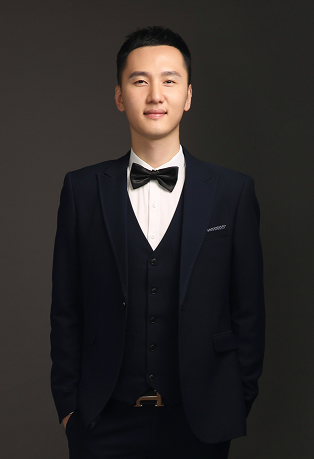
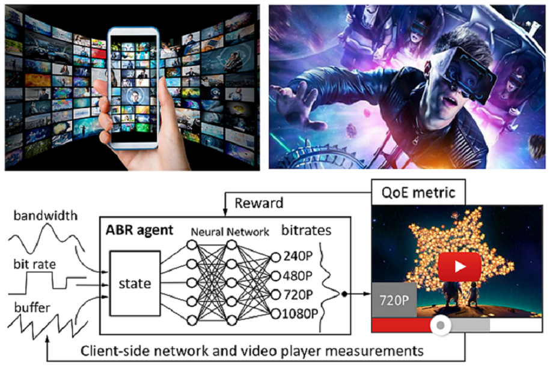

|  | Guanghui ZhangProfessor, Doctoral supervisor School of Computer Science and Technology Shandong University, Qingdao, China Email: gh.zhang [AT] sdu.edu.cn, |
We are looking for 【Postdoctoral Researchers】【PhD Candidates】【Master Candidates】and 【Undergraduate Research Assistants】. Applicants should have a strong passion for research and solid programming skills. Outstanding candidates will have opportunities for both domestic and international academic exchange. If you are interested in applying, please send your CV via email. Kindly include “Position + Your Name” in the subject line. [Details]
Dr. Guanghui Zhang obtained his PhD degree from the Department of Information Engineering at The Chinese University of Hong Kong in 2020. He then worked as a postdoctoral researcher at The Chinese University of Hong Kong from 2020 to 2021, and as a faculty member at the Department of Computer Science at The Hong Kong Baptist University from 2021 to 2022. Prior to these, he earned his MSc degree from Peking University. Dr. Zhang's research focuses on applying state-of-the-art machine learning techniques to video streaming systems, with the goal of drastically improving the viewer's quality of experience (QoE).
【Video Streaming】【Computer Network】【Machine Learning】
|  |
Guanghui Zhang, Ziming Wang, Huaren Wei, Mengbai Xiao, Hui Yuan, Dongxiao Yu, and Xiuzhen Cheng, "A Novel Spatial-Temporal Learning Method for Enhancing Generalization in Adaptive Video Streaming", IEEE Transactions on Mobile Computing (IEEE TMC), July. 2025. [CCF A, JCR Q1]
Guanghui Zhang, Jing Guo, Mengbai Xiao, Dongxiao Yu, Vaneet Aggarwal, and Xiuzhen Cheng, "A Long-Term-Planning Learning Strategy to Coordinate Viewport Prediction and Video Transmission in 360° Video Streaming", IEEE Transactions on Mobile Computing (IEEE TMC), Oct. 2024. [CCF A, JCR Q1]
Guanghui Zhang, Jing Guo, Mengbai Xiao, Dongxiao Yu, and Xiuzhen Cheng, "DeepReal: Short-form Video Streaming with Fine-grained Bitrate Adaptation", Proc. IEEE International Conference on Sensing, Communication, and Networking (IEEE SECON), Dec. 2024. [CCF B]
Shuquan Liu, Guanghui Zhang*, Mengbai Xiao, Dongxiao Yu, and Xiuzhen Cheng, "An Intelligent Prefetch Strategy with Multi-round Cell Enhancement in Volumetric Video Streaming", Proc. IEEE International Conference on Sensing, Communication, and Networking (IEEE SECON), Dec. 2024. [CCF B]
Ziming Wang, Guanghui Zhang*, Mengbai Xiao, Dongxiao Yu, and Xiuzhen Cheng, "BETA: A Novel Learning-based Adaptive Streaming Approach with Spatial and Temporal Optimization", Proc. IEEE International Conference on Sensing, Communication, and Networking (IEEE SECON), Dec. 2024. [CCF B]
Guanghui Zhang, and Jing Guo, "A Deep Reinforcement Learning Approach to Balance Viewport Prediction and Video Transmission in 360° Video Streaming," International Joint Conference on Artificial Intelligence (IJCAI'24), Aug 2024. [CCF A]
Guanghui Zhang, Ke Liu, Mengbai Xiao, Bingshu Wang, and Vaneet Aggarwal, "An Intelligent Learning Approach to Achieve Near-Second Low-Latency Live Video Streaming under Highly Fluctuating Networks," ACM International Conference on Multimedia (ACM MM'23), Oct 2023. [CCF A]
Pengqiang Bi, Mengbai Xiao, Dongxiao Yu, Guanghui Zhang, Jian Tong, Jingchao Liu, and Yijun Li, "oBBR: Optimize Retransmissions of BBR Flows on the Internet", USENIX Annual Technical Conference (USENIX ATC'23), July 2023. [CCF A]
Jie Zhang, Guanghui Zhang*, and Lirong Dai, "Frequency-Invariant Sensor Selection for MVDR Beamforming in Wireless Acoustic Sensor Networks", IEEE Transactions on Wireless Communications (IEEE TWC), July 2022. [CCF B, JCR Q1]
Guanghui Zhang, Jie Zhang, Haibo Hu, Yan Liu, Jack Y. B. Lee, and Vaneet Aggarwal, "Adaptive Video Streaming with Automatic Quality-of-Experience Optimization", IEEE Transactions on Mobile Computing (IEEE TMC), Mar. 2022. [CCF A, JCR Q1]
Guanghui Zhang, Jie Zhang, Ke Liu, Jing Guo, Haibo Hu, Jack Y. B. Lee, and Vaneet Aggarwal, "DUASVS: A Mobile Data Saving Strategy in Short-form Video Streaming", IEEE Transactions on Service Computing (IEEE TSC), Feb. 2022. [CCF A, JCR Q1]
Jie Zhang, and Guanghui Zhang*, "A Parametric Unconstrained Beamformer Based Binaural Noise Reduction for Wireless Hearing Aids", IEEE/ACM Transactions on Audio, Speech and Language Processing (IEEE/ACM TASLP), Dec. 2021. [CCF B, JCR Q1]
Guanghui Zhang, Ke Liu, Haibo Hu, and Jing Guo, "Short Video Streaming with Data Wastage Awareness", IEEE International Conference on Multimedia and Expo (IEEE ICME 2021), July 2021. [CCF B]
Guanghui Zhang, Jack Y. B. Lee, Ke Liu, Haibo Hu, and Vaneet Aggarwal, "A Unified Framework for Flexible Playback Latency Control in Live Video Streaming", IEEE Transactions on Parallel and Distributed Systems (IEEE TPDS), May 2021. [CCF A, JCR Q1]
Guanghui Zhang, Ke Liu, Haibo Hu, Vaneet Aggarwal, and Jack Y. B. Lee, "Post-Streaming Wastage Analysis – A Data Wastage Aware Framework in Mobile Video Streaming", IEEE Transactions on Mobile Computing (IEEE TMC), Mar. 2021. [CCF A, JCR Q1]
Guanghui Zhang, and Jack Y. B. Lee, "Ensemble Adaptive Streaming – A New Paradigm to Generate Streaming Algorithms via Specializations", IEEE Transactions on Mobile Computing (IEEE TMC), Apr. 2019. [CCF A, JCR Q1]
Intorduction to Computer Science (Undergraduate), @Shandong University, fall, 2024
Advanced Computer Networks (Postgraduate), @Shandong University, Spring, 2023~2024
Emerging Network Technology and Practice (Undergraduate), @Shandong University, Spring, 2023~2024
Artificial Intelligence Application (COMP3065), @Hong Kong Baptist University, Spring, 2022